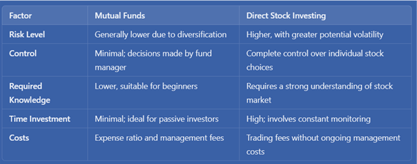

Which Option is Right for Indian Investors?
If you’re an Indian investor, you’ve probably thought about the big question—should I go for mutual funds or dive into direct stock investing?

Both can be excellent paths to building wealth, but each comes with its own flavor of risks, rewards, and responsibilities. Let’s break down the key differences so you can make a choice that actually fits your life and financial goals.
Understanding Mutual Funds
Mutual funds pool together capital from multiple investors, with fund managers allocating these funds across a diversified portfolio of assets. Managed professionally, these funds offer simplicity and risk-spreading benefits to investors.
Advantages of Mutual Funds:
- Professional Management: Fund managers handle the research and decisions, ideal for those without extensive market knowledge.
- Diversification: Investments span across various stocks, reducing the impact of individual stock volatility.
- Convenience and Flexibility: Different types of funds—equity, debt, and hybrid—allow investors to align with specific risk levels and goals.
Limitations of Mutual Funds:
- Expense Ratios: Management fees can affect returns over time.
- Limited Control: Investors lack direct input in asset selection, as the fund manager decides the allocation strategy.
Direct Stock Investing
Direct stock investing involves personally selecting and purchasing individual stocks. It requires more active engagement and a keen understanding of the market.
Advantages of Direct Stock Investing:
- Greater Control: Investors make all buying and selling decisions, enabling strategic sector choices.
- Potential for Higher Returns: Individual stocks can yield strong returns, especially when backed by solid research.
- Cost Savings: Without fund management fees, direct investing often proves cost-effective for the informed investor.
Limitations of Direct Stock Investing:
- Higher Risk: Stocks are sensitive to market fluctuations and require a risk-tolerant mindset.
- Time and Knowledge Intensive: Direct investing demands regular research, attention to economic trends, and market performance.
A Comparison of Key Factors
Real-World Examples to Help You Decide
Scenario 1: The “Set It and Forget It” Investor
If you’re working full-time and don’t want the stress of tracking daily market movements, mutual funds—especially equity or index funds—could be a wise choice. They let you participate in the market’s growth over time with much less hassle.
Scenario 2: The Active Market Watcher
Maybe you’re excited by market trends and comfortable with researching companies. In that case, direct stock investing could be fulfilling, allowing you to make targeted investments that align with your beliefs, like renewable energy or tech startups.
Scenario 3: The “Balanced” Approach
Some investors like combining both: using mutual funds for stability and direct stocks for high-growth opportunities. It’s a bit like having a safety net with room to grow.
Conclusion
Choosing between mutual funds and direct stock investing hinges on your financial goals, risk tolerance, and how involved you wish to be in managing investments. Mutual funds provide a reliable, professionally managed route with built-in diversification, making them ideal for those who prefer stability. Direct stock investing, however, appeals to investors ready for a hands-on approach and a higher risk-reward profile.
In the end, it’s about aligning your choice with your own financial vision, whether that involves steady growth, high returns, or a balanced mix of both.
See you in the next blog!